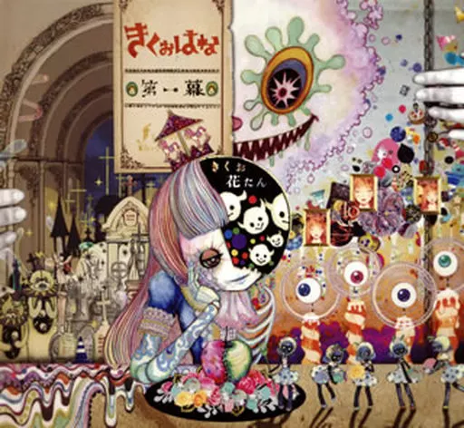
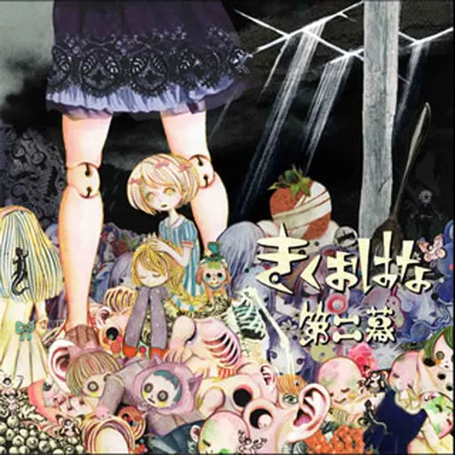

Lanzado el 30 de marzo de 2016, es el álbum debut de la colaboración. Estableció la atmósfera teatral e inquietante del proyecto, mezclando sonidos circenses con giros experimentales

Lanzado el 31 de mayo de 2017, este segundo trabajo expandió la propuesta sonora del dúo, consolidando un estilo barroco y carnavalesco oscuro.